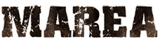
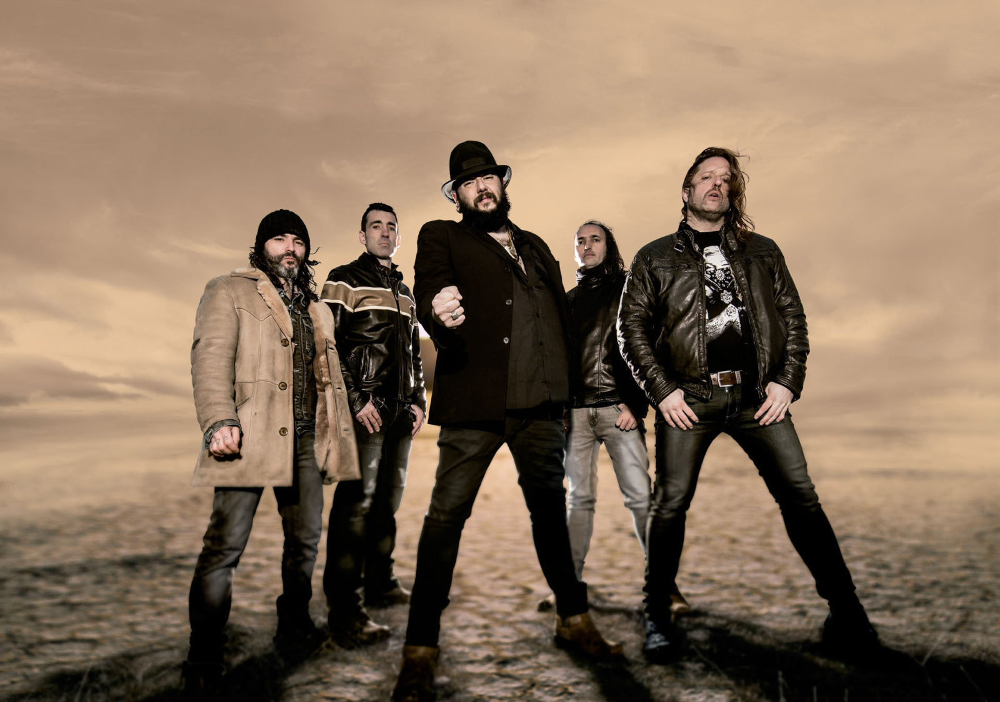

Marea es una banda de rock fundada por Kutxi Romero en Berriozar, Navarra, el día 24 de diciembre de 1997, siendo sus componentes desde entonces Kutxi Romero, como letrista y cantante; Kolibrí Díaz y César Ramallo a las guitarras; Eduardo Beaumont “Piñas” al bajo y segunda voz; y Alén Ayerdi a la batería.
El primer nombre del grupo fue La patera, y bajo dicha denominación grabaron en 1999 su primer disco, en un principio autoeditado, titulado Marea. Es al ir a registrar el nombre de la banda cuando descubren que no pueden hacerlo porque la marca ya es propiedad de otro grupo, por lo que deciden llamarse Marea. Finalmente, dicha grabación sale a la calle con el título de La patera, bajo el auspicio de la multinacional RCA, sello que les propone hacer una mini gira con el grupo sevillano Reincidentes, realizando conjuntamente una docena de conciertos que les permite salir de Navarra y darse a conocer al público estatal.
Después de ciertas discrepancias con RCA, el grupo rompe contrato en el año 2000, firmando para el siguiente trabajo con GOR, sello navarro independiente que publicará su segundo álbum, Revolcón (reeditado en 2017 por El Dromedario Records). No tardan en aparecer los problemas con la nueva discográfica, por lo que se ponen otra vez a la labor de buscar sello para editar su siguiente trabajo. Es así como recalan en la multinacional DRO, con la que publican en 2002 Besos de perro, su tercer disco. El álbum se graba bajo la supervisión y producción de Iñaki “Uoho”’ Antón.
Besos de perro llega a ser disco de oro por primera vez en la historia del grupo (distinción que alcanzarán a partir de ahora todos sus trabajos), y, desde el mismo momento de su salida, hace que el grupo explote y se consolide definitivamente en la escena, llevándole a protagonizar una gran gira que concluirá en diciembre de dicho 2002. Llegados a este punto, deciden tomarse un descanso hasta la publicación de su siguiente álbum, 28.000 puñaladas, que verá la luz en 2004. Disco de platino desde su misma fecha de salida, de su mano se embarcan en una nueva gran gira que se extiende hasta 2005. Una vez concluida, y tal y como hicieran tres años antes, protagonizan un nuevo parón en su actividad pública, nuevamente de dos años de duración.
A una con 2007, la banda comienza a trabajar en el llamado a ser su quinto álbum, Las aceras están llenas de piojos. Con el mismo, publicado en primavera, protagonizan nuevamente un espectacular tour, cruzando por primera vez el océano Atlántico y llegando a países como Argentina, Uruguay o Chile. Ya en 2008, y tras concluir la gira, se edita el disco en vivo Las putas más viejas del mundo, grabación que no presentarán en directo, tomándose un nuevo descanso (algo ya habitual en el proceder del grupo), que se prolongará hasta 2011, momento en el que se lanza En mi hambre mando yo, disco que nuevamente les lleva a girar por España y el continente americano hasta finales de 2012.
En este momento, primavera de 2019, y tras más de seis años sin actividad, Marea nos presenta El azogue, su séptimo disco. De manos de sus nuevas canciones subirá de nuevo la temperatura. Volverá a subir la Marea.